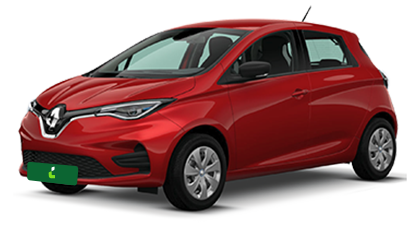

Grupos de Carros
GRUPO B - COMPACTO COM AR

Fiat Mobi 1.0, Renault Kwid 1.0 ou similar*
*Sua reserva garante um dos modelos de carro acima, estando sujeito à disponibilidade da agência.
GRUPO BE - COMPACTO ELÉTRICO
Renault Zoe e-tech Elétrico ou similar*
*Sua reserva garante um dos modelos de carro acima, estando sujeito à disponibilidade da agência.
GRUPO C - ECONÔMICO COM AR

W Gol 1.0, Renault Sandero 1.0 ou similar*
*Sua reserva garante um dos modelos de carro acima, estando sujeito à disponibilidade da agência.
GUPÓ CE - ECÔNOMICO ESPECIAL C/AR

Fiat Argo 1.0, Hyundai HB20 1.0, GM Onix LT 1.0 ou similar*
*Sua reserva garante um dos modelos de carro acima, estando sujeito à disponibilidade da agência.
GRUPO CS - ECONÔMICO SEDAN
Hyundai HB20S 1.0, GM Onix 1.0, VW Voyage 1.0 ou similar*
*Sua reserva garante um dos modelos de carro acima, estando sujeito à disponibilidade da agência.
GRUPO F - INTERMEDIÁRIO

Hyundai HB20 1.0 Turbo, Renault Sandero 1.6, VW Gol 1.6 ou similar*
*Sua reserva garante um dos modelos de carro acima, estando sujeito à disponibilidade da agência.
GRUPO FX - INTERMEDIÁRIO AUTOMÁTICO

Peugeot 208 Hatch 1.6, Hyundai HB20 1.0 Turbo, ou similar*
*Sua reserva garante um dos modelos de carro acima, estando sujeito à disponibilidade da agência.
GRUPO FS - INTERMEDIÁRIO AUTOMATICO SEDAN

Fiat Cronos 1.3, GM Onix Plus 1.0 Turbo, Fiat Grand Siena 1.4 ou similar*
*Sua reserva garante um dos modelos de carro acima, estando sujeito à disponibilidade da agência.
GRUPO FA - ADAPTADO PARA PESSOA C/ DEFICIÊNCIA

Fiat Cronos 1.8 Adaptado, GM Onix Plus 1.0 Turbo Adaptad ou similar*
*Sua reserva garante um dos modelos de carro acima, estando sujeito à disponibilidade da agência.